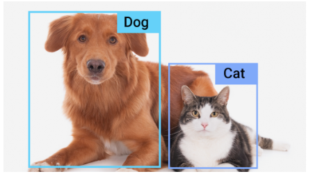
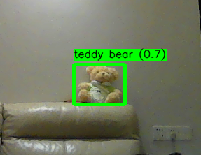
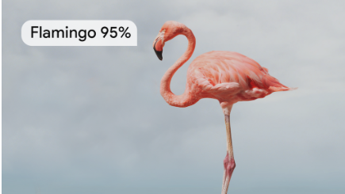
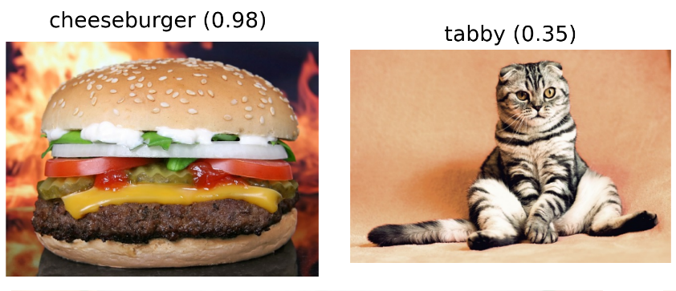
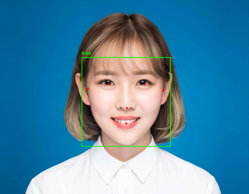
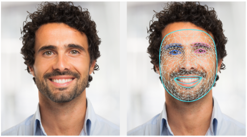
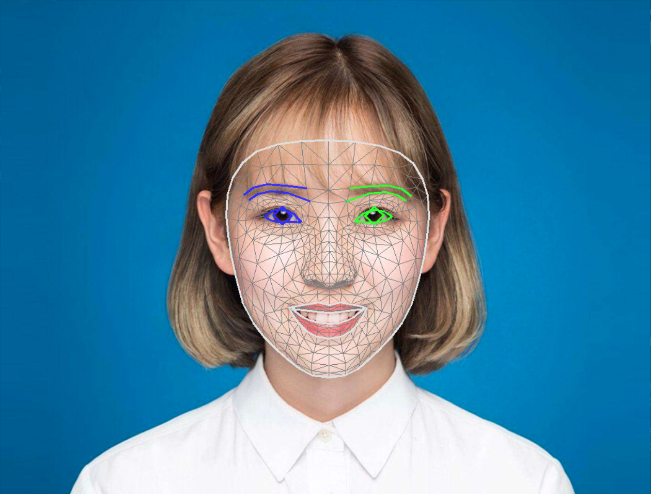
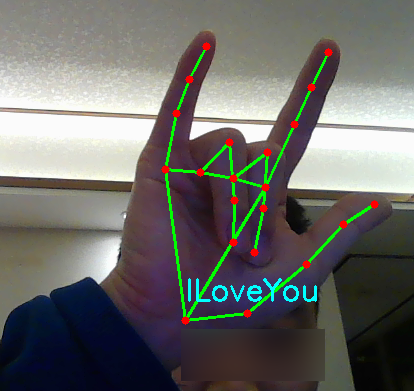
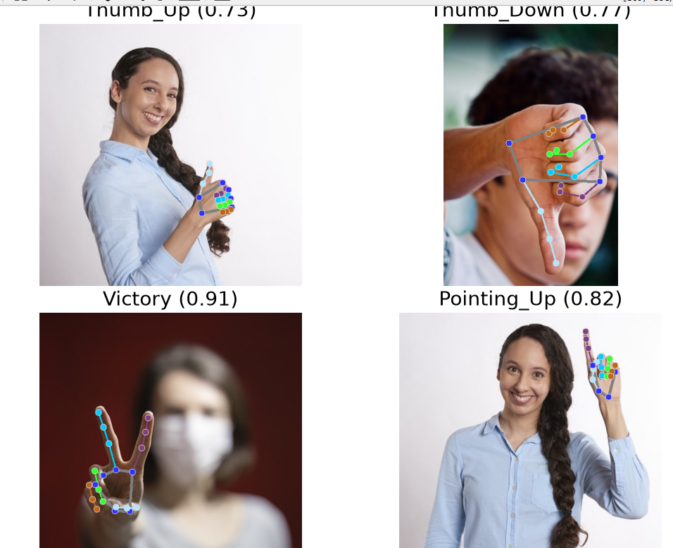
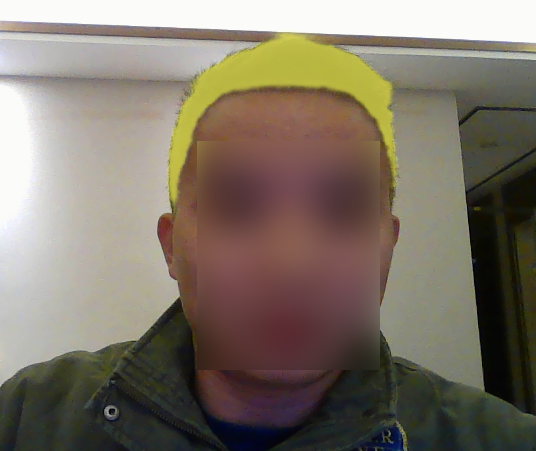

<!DOCTYPE lake>
<p data-lake-id="ud33a849a" id="ud33a849a"><span class="lake-fontsize-12" data-lake-id="u1d32084a" id="u1d32084a" style="color: rgb(32, 33, 36)">MediaPipe Solutions 提供了一套库和工具，可帮助您快速将人工智能 (AI) 和机器学习 (ML) 技术应用于您的应用程序。您可以立即将这些解决方案集成到您的应用程序中，并根据需要进行自定义，同时还能在多个开发平台上使用它们。MediaPipe Solutions 是 MediaPipe</span><a data-lake-id="u09eabe70" href="https://github.com/google/mediapipe" id="u09eabe70" rel="noopener noreferrer" target="_blank"><span data-lake-id="ud9685015" id="ud9685015" style="color: rgb(26, 115, 232)">开源项目</span></a><span class="lake-fontsize-12" data-lake-id="u69b5466b" id="u69b5466b" style="color: rgb(32, 33, 36)">的一部分，因此您可以进一步自定义解决方案代码以满足您的应用程序需求。</span></p><p data-lake-id="u85c96fb5" id="u85c96fb5"><span class="lake-fontsize-12" data-lake-id="u5af0ee4e" id="u5af0ee4e" style="color: rgb(32, 33, 36)">​</span><br/></p><h2 data-lake-id="oohAK" data-lake-index-type="2" id="oohAK"><span data-lake-id="ue88d05ef" id="ue88d05ef">目标检测</span></h2><p data-lake-id="ua1e3c1df" id="ua1e3c1df"><span class="lake-fontsize-12" data-lake-id="ub053775d" id="ub053775d" style="color: rgb(32, 33, 36)">MediaPipe 目标检测器任务允许您检测图像或视频中多种类型目标的存在及其位置。例如，目标检测器可以定位图像中的狗。此任务使用机器学习 (ML) 模型处理图像数据，接受静态数据或连续视频流作为输入，并输出检测结果列表。每个检测结果代表图像或视频中出现的一个目标。</span></p><p data-lake-id="u8636f101" id="u8636f101" style="text-align: center"></p><p data-lake-id="ucab100bd" id="ucab100bd"><span data-lake-id="uc0e61860" id="uc0e61860">下图是我随便检测的家中物体图片</span></p><p data-lake-id="uea76ff13" id="uea76ff13" style="text-align: center"></p><span class="yuque-card-unsupported">[codeblock]</span><p data-lake-id="u8837ec03" id="u8837ec03"><br/></p><h2 data-lake-id="VQOe1" data-lake-index-type="2" id="VQOe1"><span data-lake-id="u8319c2eb" id="u8319c2eb">图像分类</span></h2><p data-lake-id="u76b10864" id="u76b10864"><span class="lake-fontsize-12" data-lake-id="ue365fe2b" id="ue365fe2b" style="color: rgb(32, 33, 36)">MediaPipe 图像分类器任务允许您对图像进行分类。您可以使用此任务来识别图像在训练时定义的一组类别中代表什么。此任务使用机器学习 (ML) 模型处理图像数据，数据可以是静态的，也可以是连续的流，并输出一个按概率得分降序排列的潜在类别列表。</span></p><p data-lake-id="u4fd56bd3" id="u4fd56bd3" style="text-align: center"></p><span class="yuque-card-unsupported">[codeblock]</span><p data-lake-id="ue05e7740" id="ue05e7740" style="text-align: center"></p><p data-lake-id="ue408dd2d" id="ue408dd2d" style="text-align: center"><br/></p><h2 data-lake-id="hU6NB" data-lake-index-type="2" id="hU6NB"><span data-lake-id="u77aedd2d" id="u77aedd2d">图像分割</span></h2><p data-lake-id="u40b95a04" id="u40b95a04" style="text-align: center"></p><p data-lake-id="ub2ff0fe1" id="ub2ff0fe1"><span class="lake-fontsize-12" data-lake-id="u1a332b43" id="u1a332b43" style="color: rgb(32, 33, 36)">MediaPipe 图像分割器任务允许您根据预定义的类别将图像分割成多个区域。您可以使用此功能识别特定对象或纹理，然后应用背景模糊等视觉效果。此任务包含多个专门训练用于分割图像数据中人物及其特征的模型，其中包括：</span></p><ul list="u29e82754"><li data-lake-id="ufc233062" fid="u0fac6900" id="ufc233062"><span class="lake-fontsize-12" data-lake-id="u7d9fb606" id="u7d9fb606" style="color: rgb(32, 33, 36)">人物及背景</span></li><li data-lake-id="u9a0c7813" fid="u0fac6900" id="u9a0c7813"><span class="lake-fontsize-12" data-lake-id="u15c43147" id="u15c43147" style="color: rgb(32, 33, 36)">仅人的头发</span></li><li data-lake-id="u5f491e7b" fid="u0fac6900" id="u5f491e7b"><span class="lake-fontsize-12" data-lake-id="ud77ac208" id="ud77ac208" style="color: rgb(32, 33, 36)">人的头发、脸、皮肤、衣着和配饰</span></li></ul><p data-lake-id="u6b63f517" id="u6b63f517"><span class="lake-fontsize-12" data-lake-id="u19197c10" id="u19197c10" style="color: rgb(32, 33, 36)">此任务使用机器学习 (ML) 模型处理图像数据，可处理单张图像或连续视频流。它会输出一个分割区域列表，这些区域代表图像中的对象或区域，具体取决于您选择的</span><a data-lake-id="uaec67f9f" href="https://developers.google.com/edge/mediapipe/solutions/vision/image_segmenter#models" id="uaec67f9f" rel="noopener noreferrer" target="_blank"><span class="lake-fontsize-12" data-lake-id="u1f7edf5a" id="u1f7edf5a" style="color: rgb(26, 115, 232)">模型</span></a><span class="lake-fontsize-12" data-lake-id="u8b3e36da" id="u8b3e36da" style="color: rgb(32, 33, 36)">。</span></p><h3 data-lake-id="yfDPY" data-lake-index-type="2" id="yfDPY"><span data-lake-id="ufce5212c" id="ufce5212c" style="color: rgb(32, 33, 36)">自拍分割模型</span></h3><p data-lake-id="u2c1dfe49" id="u2c1dfe49"><span class="lake-fontsize-12" data-lake-id="u7788aef3" id="u7788aef3" style="color: rgb(32, 33, 36)">该模型可以分割人像，并可用于替换或修改图像背景。模型输出两类数据：索引为 0 的背景和索引为 1 的人像。该模型有多种版本，支持不同的输入形状，包括正方形版本和横向版本。横向版本可能更适合输入始终为特定形状的应用，例如视频通话。</span></p><table class="lake-table" data-lake-id="wKY8N" id="wKY8N" style="width: 789px"><colgroup><col width="187"/><col width="150"/><col width="150"/><col width="302"/></colgroup><tbody><tr data-lake-id="u8d5e2e22" id="u8d5e2e22"><td data-lake-id="u9f676aa0" id="u9f676aa0" style="vertical-align: middle"><p data-lake-id="u12446a20" id="u12446a20" style="text-align: left"><span data-lake-id="uf3b2699b" id="uf3b2699b" style="color: rgb(32, 33, 36)">型号名称</span></p></td><td data-lake-id="udad32254" id="udad32254" style="vertical-align: middle"><p data-lake-id="u21974c7b" id="u21974c7b" style="text-align: left"><span data-lake-id="uaf04c28e" id="uaf04c28e" style="color: rgb(32, 33, 36)">输入形状</span></p></td><td data-lake-id="ue1c8ba55" id="ue1c8ba55" style="vertical-align: middle"><p data-lake-id="u280b3774" id="u280b3774" style="text-align: left"><span data-lake-id="uc97afd5b" id="uc97afd5b" style="color: rgb(32, 33, 36)">量化类型</span></p></td><td data-lake-id="u221b2ce5" id="u221b2ce5" style="vertical-align: middle"><p data-lake-id="ufab38d15" id="ufab38d15" style="text-align: left"><span data-lake-id="u17fc7f3d" id="u17fc7f3d" style="color: rgb(32, 33, 36)">模型卡</span></p></td></tr><tr data-lake-id="ud8ed4555" id="ud8ed4555"><td data-lake-id="ub44a2378" id="ub44a2378" style="vertical-align: top"><p data-lake-id="u58a5fd49" id="u58a5fd49" style="text-align: left"><a data-lake-id="u638d2036" href="https://storage.googleapis.com/mediapipe-models/image_segmenter/selfie_segmenter/float16/latest/selfie_segmenter.tflite" id="u638d2036" rel="noopener noreferrer" target="_blank"><span data-lake-id="u8a6c444e" id="u8a6c444e" style="color: rgb(26, 115, 232)">自拍分割器（方形）</span></a></p></td><td data-lake-id="u95f92b29" id="u95f92b29" style="vertical-align: top"><p data-lake-id="u73aae3cb" id="u73aae3cb" style="text-align: left"><span data-lake-id="uc63f87a7" id="uc63f87a7" style="color: rgb(32, 33, 36)">256 x 256</span></p></td><td data-lake-id="u048a9804" id="u048a9804" style="vertical-align: top"><p data-lake-id="ue79cf8dc" id="ue79cf8dc" style="text-align: left"><span data-lake-id="u72797fdb" id="u72797fdb" style="color: rgb(32, 33, 36)">浮点数 16</span></p></td><td data-lake-id="uad79da3f" id="uad79da3f" style="vertical-align: top"><p data-lake-id="uf89736a0" id="uf89736a0" style="text-align: left"><a data-lake-id="u8bffaf8b" href="https://storage.googleapis.com/mediapipe-assets/Model%20Card%20MediaPipe%20Selfie%20Segmentation.pdf" id="u8bffaf8b" rel="noopener noreferrer" target="_blank"><span data-lake-id="u3ae64876" id="u3ae64876" style="color: rgb(26, 115, 232)">信息</span></a></p></td></tr><tr data-lake-id="uc8a070e7" id="uc8a070e7"><td data-lake-id="u1de49953" id="u1de49953" style="vertical-align: top"><p data-lake-id="u123eec37" id="u123eec37" style="text-align: left"><a data-lake-id="u98368daf" href="https://storage.googleapis.com/mediapipe-models/image_segmenter/selfie_segmenter_landscape/float16/latest/selfie_segmenter_landscape.tflite" id="u98368daf" rel="noopener noreferrer" target="_blank"><span data-lake-id="ufb400f8f" id="ufb400f8f" style="color: rgb(26, 115, 232)">自拍分割器（横屏）</span></a></p></td><td data-lake-id="ubba317fb" id="ubba317fb" style="vertical-align: top"><p data-lake-id="u6b6bd1d7" id="u6b6bd1d7" style="text-align: left"><span data-lake-id="ua79d2684" id="ua79d2684" style="color: rgb(32, 33, 36)">144 x 256</span></p></td><td data-lake-id="u909a358d" id="u909a358d" style="vertical-align: top"><p data-lake-id="uf258389b" id="uf258389b" style="text-align: left"><span data-lake-id="u340477ce" id="u340477ce" style="color: rgb(32, 33, 36)">浮点数 16</span></p></td><td data-lake-id="u24884a73" id="u24884a73" style="vertical-align: top"><p data-lake-id="u88c67578" id="u88c67578" style="text-align: left"><a data-lake-id="u3b9a33cb" href="https://storage.googleapis.com/mediapipe-assets/Model%20Card%20MediaPipe%20Selfie%20Segmentation.pdf" id="u3b9a33cb" rel="noopener noreferrer" target="_blank"><span data-lake-id="u80e7975a" id="u80e7975a" style="color: rgb(26, 115, 232)">信息</span></a></p></td></tr></tbody></table><p data-lake-id="u77009f32" id="u77009f32"><span data-lake-id="uf7d43eba" id="uf7d43eba" style="color: rgb(32, 33, 36)"><br><br/></br></span></p><h3 data-lake-id="hair-model" data-lake-index-type="2" id="hair-model"><span data-lake-id="ue3b72e86" id="ue3b72e86" style="color: rgb(32, 33, 36)">毛发分割模型</span></h3><p data-lake-id="uccb99873" id="uccb99873"><span class="lake-fontsize-12" data-lake-id="u8b5636e8" id="u8b5636e8" style="color: rgb(32, 33, 36)">该模型接收一张人物图像，定位其头部头发，并输出头发的图像分割图。您可以使用此模型对头发进行重新着色或应用其他头发特效。该模型输出以下分割类别：</span></p><span class="yuque-card-unsupported">[codeblock]</span><table class="lake-table" data-lake-id="RVrBQ" id="RVrBQ" style="width: 850px"><colgroup><col width="150"/><col width="150"/><col width="257"/><col width="293"/></colgroup><tbody><tr data-lake-id="ubba1c11e" id="ubba1c11e"><td data-lake-id="u0e3cbfe4" id="u0e3cbfe4" style="vertical-align: middle"><p data-lake-id="u67c9bff2" id="u67c9bff2" style="text-align: left"><span class="lake-fontsize-12" data-lake-id="u70d0f46e" id="u70d0f46e" style="color: rgb(32, 33, 36)">型号名称</span></p></td><td data-lake-id="u70cb42ea" id="u70cb42ea" style="vertical-align: middle"><p data-lake-id="u6bdb59aa" id="u6bdb59aa" style="text-align: left"><span class="lake-fontsize-12" data-lake-id="uf29f2da4" id="uf29f2da4" style="color: rgb(32, 33, 36)">输入形状</span></p></td><td data-lake-id="u8dfd48d7" id="u8dfd48d7" style="vertical-align: middle"><p data-lake-id="u0d5ad6f2" id="u0d5ad6f2" style="text-align: left"><span class="lake-fontsize-12" data-lake-id="ua5f710b8" id="ua5f710b8" style="color: rgb(32, 33, 36)">量化类型</span></p></td><td data-lake-id="u462c1b4c" id="u462c1b4c" style="vertical-align: middle"><p data-lake-id="u0967c0bc" id="u0967c0bc" style="text-align: left"><span class="lake-fontsize-12" data-lake-id="ud16561e9" id="ud16561e9" style="color: rgb(32, 33, 36)">模型卡</span></p></td></tr><tr data-lake-id="ue45e3f93" id="ue45e3f93"><td data-lake-id="ue5725d89" id="ue5725d89" style="vertical-align: top"><p data-lake-id="u018bea54" id="u018bea54" style="text-align: left"><a data-lake-id="u9d6d90e8" href="https://storage.googleapis.com/mediapipe-models/image_segmenter/hair_segmenter/float32/latest/hair_segmenter.tflite" id="u9d6d90e8" rel="noopener noreferrer" target="_blank"><span class="lake-fontsize-12" data-lake-id="ufc18c3de" id="ufc18c3de" style="color: rgb(26, 115, 232)">毛发分割器</span></a></p></td><td data-lake-id="u1cad7913" id="u1cad7913" style="vertical-align: top"><p data-lake-id="u832dd8c8" id="u832dd8c8" style="text-align: left"><span class="lake-fontsize-12" data-lake-id="u72856111" id="u72856111" style="color: rgb(32, 33, 36)">512 x 512</span></p></td><td data-lake-id="ue5659d4c" id="ue5659d4c" style="vertical-align: top"><p data-lake-id="u5320a39e" id="u5320a39e" style="text-align: left"><span class="lake-fontsize-12" data-lake-id="uc4d29c89" id="uc4d29c89" style="color: rgb(32, 33, 36)">无（float32）</span></p></td><td data-lake-id="udcd840fe" id="udcd840fe" style="vertical-align: top"><p data-lake-id="ucd6cd8c0" id="ucd6cd8c0" style="text-align: left"><a data-lake-id="u65f91d39" href="https://storage.googleapis.com/mediapipe-assets/Model%20Card%20-%20Hair%20Segmentation.pdf" id="u65f91d39" rel="noopener noreferrer" target="_blank"><span class="lake-fontsize-12" data-lake-id="u89872664" id="u89872664" style="color: rgb(26, 115, 232)">信息</span></a></p></td></tr></tbody></table><h3 data-lake-id="multiclass-model" data-lake-index-type="2" id="multiclass-model"><span data-lake-id="uc690cf65" id="uc690cf65" style="color: rgb(32, 33, 36)">多类别自拍分割模型</span></h3><p data-lake-id="u41fbf741" id="u41fbf741"><span class="lake-fontsize-12" data-lake-id="u1a9aa97b" id="u1a9aa97b" style="color: rgb(32, 33, 36)">该模型接收一张人物图像，定位头发、皮肤和衣物等不同区域，并输出这些区域的图像分割图。您可以使用此模型对图像或视频中的人物应用各种特效。该模型输出以下分割类别：</span></p><span class="yuque-card-unsupported">[codeblock]</span><table class="lake-table" data-lake-id="U7hvu" id="U7hvu" style="width: 771px"><colgroup><col width="222"/><col width="150"/><col width="150"/><col width="249"/></colgroup><tbody><tr data-lake-id="uf167a6ca" id="uf167a6ca"><td data-lake-id="u80476c84" id="u80476c84" style="vertical-align: middle"><p data-lake-id="u8ca904fd" id="u8ca904fd" style="text-align: left"><span class="lake-fontsize-12" data-lake-id="uaf80da05" id="uaf80da05" style="color: rgb(32, 33, 36)">型号名称</span></p></td><td data-lake-id="ufa909330" id="ufa909330" style="vertical-align: middle"><p data-lake-id="u29c4702e" id="u29c4702e" style="text-align: left"><span class="lake-fontsize-12" data-lake-id="u8465b884" id="u8465b884" style="color: rgb(32, 33, 36)">输入形状</span></p></td><td data-lake-id="u4f2fb392" id="u4f2fb392" style="vertical-align: middle"><p data-lake-id="u048d7194" id="u048d7194" style="text-align: left"><span class="lake-fontsize-12" data-lake-id="u8f233c90" id="u8f233c90" style="color: rgb(32, 33, 36)">量化类型</span></p></td><td data-lake-id="u0f6e52e7" id="u0f6e52e7" style="vertical-align: middle"><p data-lake-id="ue270b219" id="ue270b219" style="text-align: left"><span class="lake-fontsize-12" data-lake-id="ueb1a380b" id="ueb1a380b" style="color: rgb(32, 33, 36)">模型卡</span></p></td></tr><tr data-lake-id="uc7b2a497" id="uc7b2a497"><td data-lake-id="u952a5747" id="u952a5747" style="vertical-align: top"><p data-lake-id="u5a940a56" id="u5a940a56" style="text-align: left"><a data-lake-id="u83201c57" href="https://storage.googleapis.com/mediapipe-models/image_segmenter/selfie_multiclass_256x256/float32/latest/selfie_multiclass_256x256.tflite" id="u83201c57" rel="noopener noreferrer" target="_blank"><span class="lake-fontsize-12" data-lake-id="u6874d2f6" id="u6874d2f6" style="color: rgb(26, 115, 232)">SelfieMulticlass（256 x 256）</span></a></p></td><td data-lake-id="u51b8c1e2" id="u51b8c1e2" style="vertical-align: top"><p data-lake-id="u4d6b16ea" id="u4d6b16ea" style="text-align: left"><span class="lake-fontsize-12" data-lake-id="u44fed46f" id="u44fed46f" style="color: rgb(32, 33, 36)">256 x 256</span></p></td><td data-lake-id="u21d4c0a5" id="u21d4c0a5" style="vertical-align: top"><p data-lake-id="u58701b2f" id="u58701b2f" style="text-align: left"><span class="lake-fontsize-12" data-lake-id="u13f5e099" id="u13f5e099" style="color: rgb(32, 33, 36)">无（float32）</span></p></td><td data-lake-id="u501e628f" id="u501e628f" style="vertical-align: top"><p data-lake-id="uab4d19f4" id="uab4d19f4" style="text-align: left"><a data-lake-id="u21b787b0" href="https://storage.googleapis.com/mediapipe-assets/Model%20Card%20Multiclass%20Segmentation.pdf" id="u21b787b0" rel="noopener noreferrer" target="_blank"><span class="lake-fontsize-12" data-lake-id="u533ce32c" id="u533ce32c" style="color: rgb(26, 115, 232)">信息</span></a></p></td></tr></tbody></table><p data-lake-id="udd9feadc" id="udd9feadc"><span class="lake-fontsize-12" data-lake-id="uecb47bfe" id="uecb47bfe" style="color: rgb(32, 33, 36)">​</span><br/></p><h3 data-lake-id="deeplab-v3" data-lake-index-type="2" id="deeplab-v3"><span data-lake-id="uea1d6095" id="uea1d6095" style="color: rgb(32, 33, 36)">Deep</span><span data-lake-id="ube9bd585" id="ube9bd585" style="color: rgb(32, 33, 36)">Lab-v3模型</span></h3><p data-lake-id="u1104f9f6" id="u1104f9f6"><span class="lake-fontsize-12" data-lake-id="u730f2d2f" id="u730f2d2f" style="color: rgb(32, 33, 36)">该模型可识别多个类别的分割区域，包括背景、人物、猫、狗和盆栽植物。该模型采用空洞空间金字塔池化技术来捕捉更长距离的信息。更多信息请参见 </span><a data-lake-id="u66f70154" href="https://tfhub.dev/tensorflow/lite-model/deeplabv3/latest/metadata/2" id="u66f70154" rel="noopener noreferrer" target="_blank"><span class="lake-fontsize-12" data-lake-id="u1cbc4817" id="u1cbc4817" style="color: rgb(26, 115, 232)">DeepLab-v3</span></a><span class="lake-fontsize-12" data-lake-id="u6cff4e74" id="u6cff4e74" style="color: rgb(32, 33, 36)">。</span></p><table class="lake-table" data-lake-id="S27Js" id="S27Js" style="width: 561px"><colgroup><col width="187"/><col width="187"/><col width="187"/></colgroup><tbody><tr data-lake-id="u85d731e1" id="u85d731e1"><td data-lake-id="u29106e7b" id="u29106e7b" style="vertical-align: middle"><p data-lake-id="u81efa821" id="u81efa821" style="text-align: left"><span data-lake-id="ua6029177" id="ua6029177" style="color: rgb(32, 33, 36)">型号名称</span></p></td><td data-lake-id="ua2614f2d" id="ua2614f2d" style="vertical-align: middle"><p data-lake-id="u9501a328" id="u9501a328" style="text-align: left"><span data-lake-id="u9f4587ea" id="u9f4587ea" style="color: rgb(32, 33, 36)">输入形状</span></p></td><td data-lake-id="u901c9b37" id="u901c9b37" style="vertical-align: middle"><p data-lake-id="ue2ac6dc4" id="ue2ac6dc4" style="text-align: left"><span data-lake-id="u96ec77f0" id="u96ec77f0" style="color: rgb(32, 33, 36)">量化类型</span></p></td></tr><tr data-lake-id="u8ef6106e" id="u8ef6106e"><td data-lake-id="u47dc39b1" id="u47dc39b1" style="vertical-align: top"><p data-lake-id="u6681a4a0" id="u6681a4a0" style="text-align: left"><a data-lake-id="udefa2071" href="https://storage.googleapis.com/mediapipe-models/image_segmenter/deeplab_v3/float32/latest/deeplab_v3.tflite" id="udefa2071" rel="noopener noreferrer" target="_blank"><span data-lake-id="uc63e9af7" id="uc63e9af7" style="color: rgb(26, 115, 232)">DeepLab-V3</span></a></p></td><td data-lake-id="u1167b481" id="u1167b481" style="vertical-align: top"><p data-lake-id="u51f167a8" id="u51f167a8" style="text-align: left"><span data-lake-id="u6d8a293e" id="u6d8a293e" style="color: rgb(32, 33, 36)">257 x 257</span></p></td><td data-lake-id="u8623185d" id="u8623185d" style="vertical-align: top"><p data-lake-id="u2057a0a3" id="u2057a0a3" style="text-align: left"><span data-lake-id="ubb3048f1" id="ubb3048f1" style="color: rgb(32, 33, 36)">无（float32）</span></p></td></tr></tbody></table><span class="yuque-card-unsupported">[codeblock]</span><p data-lake-id="u82988156" id="u82988156" style="text-align: center"></p><h2 data-lake-id="oNm1F" data-lake-index-type="2" id="oNm1F"><span data-lake-id="u82350a5b" id="u82350a5b">人脸检测</span></h2><p data-lake-id="u0b5f40a6" id="u0b5f40a6"><span class="lake-fontsize-12" data-lake-id="u14acf2f7" id="u14acf2f7" style="color: rgb(32, 33, 36)">MediaPipe 人脸检测器任务可用于检测图像或视频中的人脸。您可以使用此任务在帧中定位人脸和面部特征。此任务使用机器学习 (ML) 模型，可处理单张图像或连续图像流。该任务输出人脸位置，以及以下面部关键点：左眼、右眼、鼻尖、嘴巴、左眼眶和右眼眶。</span></p><p data-lake-id="u59411633" id="u59411633" style="text-align: center"></p><span class="yuque-card-unsupported">[codeblock]</span><p data-lake-id="u5e2127db" id="u5e2127db"><br/></p><h2 data-lake-id="MbTge" data-lake-index-type="2" id="MbTge"><span data-lake-id="ue2c7c95d" id="ue2c7c95d">面部关键点</span></h2><p data-lake-id="u8200fc33" id="u8200fc33"><span class="lake-fontsize-12" data-lake-id="u0802393c" id="u0802393c" style="color: rgb(32, 33, 36)">MediaPipe 的“面部特征点”任务可用于检测图像和视频中的面部特征点和面部表情。您可以使用此任务识别人类面部表情、应用面部滤镜和特效，以及创建虚拟化身。此任务使用机器学习 (ML) 模型，可以处理单张图像或连续图像流。该任务输出三维面部特征点、混合变形分数（代表面部表情的系数，用于实时推断精细的面部表面）以及变换矩阵，以执行特效渲染所需的变换。</span></p><p data-lake-id="u70b0a794" id="u70b0a794" style="text-align: center"></p><span class="yuque-card-unsupported">[codeblock]</span><p data-lake-id="u001e5ddf" id="u001e5ddf" style="text-align: center"></p><h2 data-lake-id="R3vt2" data-lake-index-type="2" id="R3vt2"><span data-lake-id="u2a900a37" id="u2a900a37">手势识别</span></h2><p data-lake-id="ua21d1f5b" id="ua21d1f5b" style="text-align: center"></p><p data-lake-id="ud28acc12" id="ud28acc12"><span class="lake-fontsize-12" data-lake-id="u13bd53e7" id="u13bd53e7" style="color: rgb(32, 33, 36)">MediaPipe 手势识别器任务可以实时识别手势，并提供识别结果以及检测到的手部特征点。以下说明将指导您如何在 Python 应用程序中使用手势识别器。</span></p><p data-lake-id="ua8e0586d" id="ua8e0586d"><span data-lake-id="u55f546e6" id="u55f546e6">默认只能识别七种手势：</span></p><p data-lake-id="u3f0b43c1" id="u3f0b43c1"><span class="lake-fontsize-30" data-lake-id="uc782b5bf" id="uc782b5bf" style="color: rgb(60, 64, 67)">👍</span><span class="lake-fontsize-30" data-lake-id="u35a2d152" id="u35a2d152" style="color: rgb(60, 64, 67)">, </span><span class="lake-fontsize-30" data-lake-id="u5b239c9e" id="u5b239c9e" style="color: rgb(60, 64, 67)">👎</span><span class="lake-fontsize-30" data-lake-id="uf0d8d5c4" id="uf0d8d5c4" style="color: rgb(60, 64, 67)">, </span><span class="lake-fontsize-30" data-lake-id="uc475942d" id="uc475942d" style="color: rgb(60, 64, 67)">✌️</span><span class="lake-fontsize-30" data-lake-id="u560df60b" id="u560df60b" style="color: rgb(60, 64, 67)">, </span><span class="lake-fontsize-30" data-lake-id="u2bd62283" id="u2bd62283" style="color: rgb(60, 64, 67)">☝️</span><span class="lake-fontsize-30" data-lake-id="ub1ecf779" id="ub1ecf779" style="color: rgb(60, 64, 67)">, </span><span class="lake-fontsize-30" data-lake-id="u6a9810ae" id="u6a9810ae" style="color: rgb(60, 64, 67)">✊</span><span class="lake-fontsize-30" data-lake-id="u479d0317" id="u479d0317" style="color: rgb(60, 64, 67)">, </span><span class="lake-fontsize-30" data-lake-id="u78be4a11" id="u78be4a11" style="color: rgb(60, 64, 67)">👋</span><span class="lake-fontsize-30" data-lake-id="u3e93a712" id="u3e93a712" style="color: rgb(60, 64, 67)">, </span><span class="lake-fontsize-30" data-lake-id="ua4e1bc56" id="ua4e1bc56" style="color: rgb(60, 64, 67)">🤟</span></p><h3 data-lake-id="da3j2" data-lake-index-type="2" id="da3j2"><span data-lake-id="u0506696e" id="u0506696e" style="color: rgb(60, 64, 67)">手势图片识别</span></h3><p data-lake-id="u3b2a0a02" id="u3b2a0a02"></p><span class="yuque-card-unsupported">[codeblock]</span><p data-lake-id="ue3813de4" id="ue3813de4"><span class="lake-fontsize-30" data-lake-id="uaf463112" id="uaf463112" style="color: rgb(60, 64, 67)">​</span><br/></p><span class="yuque-card-unsupported">[codeblock]</span><p data-lake-id="ud0313a11" id="ud0313a11"><span class="lake-fontsize-30" data-lake-id="u53a39e15" id="u53a39e15" style="color: rgb(60, 64, 67)">​</span><br/></p><p data-lake-id="u19c76680" id="u19c76680"><span class="lake-fontsize-30" data-lake-id="u87050cca" id="u87050cca" style="color: rgb(60, 64, 67)">​</span><br/></p><p data-lake-id="u1912b201" id="u1912b201"><br/></p><h2 data-lake-id="sryTN" data-lake-index-type="2" id="sryTN"><span data-lake-id="u1c72c7c1" id="u1c72c7c1">染个黄毛</span></h2><p data-lake-id="u41eee067" id="u41eee067" style="text-align: center"></p><span class="yuque-card-unsupported">[codeblock]</span><p data-lake-id="ua1576178" id="ua1576178"><br/></p><p data-lake-id="uf91ce32e" id="uf91ce32e"><br/></p>